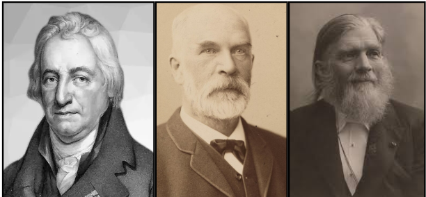

MENGAMATI
Petunjuk:
Video berikut menampilkan reaksi antara gas amonia (NH₃) dan gas asam klorida (HCl). Perhatikan dengan saksama perubahan yang terjadi sebelum, selama, dan sesudah kedua zat tersebut bereaksi!
Setelah mengamati fenomena yang ditampilkan, diskusikan bersama guru dan teman-teman anda mengenai hal-hal berikut.
- Perubahan apa yang terlihat saat reaksi berlangsung?
- Bukti apa yang menunjukkan bahwa telah terjadi reaksi kimia?
- Apakah setelah produk terbentuk reaksi benar-benar berhenti? Mengapa demikian?
- Mengapa kondisi sistem tertutup penting agar kesetimbangan dapat tercapai?
- Setelah beberapa waktu, apakah sistem masih mengalami perubahan? Jelaskan berdasarkan pengamatanmu!
Sampaikan pendapatmu secara lisan dan dengarkan pendapat teman yang lain dengan sikap saling menghargai.
Dari fenomena tersebut, kita dapat memahami bahwa reaksi kimia tidak selalu berlangsung satu arah.
1️⃣ Reaksi Satu Arah (Irreversible)
Reaksi yang berlangsung sampai salah satu pereaksi habis dan tidak dapat kembali menjadi zat semula.
Contoh:
HCl + NaOH → NaCl + H₂O
Setelah reaksi selesai, produk tidak kembali menjadi pereaksi.
2️⃣ Reaksi Dua Arah (Reversible)
Reaksi yang dapat berlangsung ke arah pembentukan produk dan kembali membentuk pereaksi.
Dituliskan dengan tanda panah bolak-balik:
Dalam sistem tertutup, reaksi dua arah dapat mencapai keadaan yang disebut kesetimbangan kimia.
🌿 Hakikat Observasi dalam Sains (Empirical-Based Science)
Dalam sains, semuanya berawal dari apa yang kita amati secara nyata 🔎. Pada percobaan ini, anda tidak hanya menonton video, tetapi sedang melihat bagaimana pengetahuan ilmiah terbentuk dari fenomena yang dapat diamati.
Coba perhatikan proses berikut:
🧪 Gas amonia (NH₃) dan gas HCl dimasukkan dari dua sisi tabung.
🌫️ Terbentuk asap putih berupa amonium klorida (NH₄Cl).
📍 Asap muncul pada titik tertentu, tidak tepat di tengah tabung.
⚖️ Setelah beberapa waktu, perubahan tampak stabil.
Dari pengamatan sederhana ini, kita bisa memahami bahwa sains tidak muncul dari tebakan. Pengetahuan ilmiah berkembang dari fenomena yang bisa dilihat, diukur, dan diuji kembali.
👉 Dalam konteks ini, asap putih bukan sekadar “efek visual”, tetapi bukti terbentuknya zat baru. Posisi terbentuknya asap juga memberi informasi tentang laju difusi gas dan massa molekul relatifnya. Sementara kondisi yang tampak stabil mengarah pada dugaan adanya kesetimbangan.
Dengan kata lain, ilmu pengetahuan tumbuh dari data observasi yang nyata, bukan dari opini.
📚 Asal Mula Konsep Kesetimbangan (Tentative & Historical Development)

Sumber: https://en.wikipedia.org/
Konsep kesetimbangan kimia tidak muncul secara tiba-tiba. Pada awalnya, ilmuwan abad ke-18 menganggap bahwa reaksi kimia selalu berjalan satu arah hingga pereaksi habis.
Namun, pengamatan selanjutnya menunjukkan hal berbeda. Ilmuwan seperti Claude Louis Berthollet, Cato Maximilian Guldberg, dan Peter Waage menemukan bahwa beberapa reaksi ternyata dapat berlangsung dua arah .
Mereka mengamati bahwa:
⚗️ Produk dapat kembali menjadi pereaksi
⚖️ Sistem bisa mencapai kondisi stabil
🔄 Reaksi tetap berlangsung meskipun tampak tidak berubah
Dari sinilah muncul konsep penting seperti reaksi reversibel, kesetimbangan dinamis, dan hukum aksi massa.
Hal ini menunjukkan bahwa pengetahuan sains bersifat tentatif, artinya dapat berkembang dan diperbaiki ketika ditemukan bukti baru. Konsep kesetimbangan lahir karena ilmuwan berani mempertanyakan hasil pengamatan yang tidak sesuai teori sebelumnya.
🧠 Inferensi Ilmiah (Observation vs Inference)
Dalam video, kamu bisa melihat terbentuknya asap putih dan kondisi sistem yang tampak stabil. Namun, ada proses penting yang tidak dapat diamati secara langsung, seperti tumbukan molekul dan reaksi maju-balik.
Di sinilah inferensi ilmiah berperan. Ilmuwan menggunakan bukti yang terlihat untuk menyimpulkan proses yang tidak terlihat.
Misalnya:
📊 Konsentrasi tampak stabil → kemungkinan terjadi kesetimbangan dinamis
👀 Tidak ada perubahan makroskopik → bukan berarti reaksi berhenti
Jadi, sains tidak hanya tentang apa yang kita lihat, tetapi juga tentang bagaimana kita menafsirkan bukti secara rasional.
🔬 Peran Model dalam Sains (Use of Scientific Models)
Karena molekul tidak dapat diamati langsung, ilmuwan menggunakan model untuk membantu menjelaskan fenomena mikroskopik.
Beberapa contoh model yang digunakan:
⚛️ Model partikel
⇌ Persamaan reaksi dua arah
📈 Diagram laju reaksi
Model ini membantu kita memahami bahwa pada kesetimbangan, laju reaksi maju sama dengan laju reaksi balik. Secara makroskopik jumlah zat tampak tetap, tetapi secara mikroskopik partikel terus bereaksi.
Perlu diingat, model bukan realitas sebenarnya, melainkan representasi yang mempermudah penjelasan fenomena ilmiah.
⚙️ Sistem Tertutup dan Kontrol Variabel (Scientific Method & Control)
Kesetimbangan kimia hanya dapat tercapai dalam kondisi tertentu, salah satunya adalah sistem tertutup.
Jika sistem terbuka:
💨 Gas dapat keluar
📉 Konsentrasi berubah
⚖️ Kesetimbangan sulit tercapai
Melalui eksperimen terkontrol, ilmuwan mengatur variabel seperti volume, suhu, dan tekanan, lalu mengamati dampaknya terhadap sistem. Pendekatan ini membantu memahami hubungan sebab-akibat secara lebih akurat.